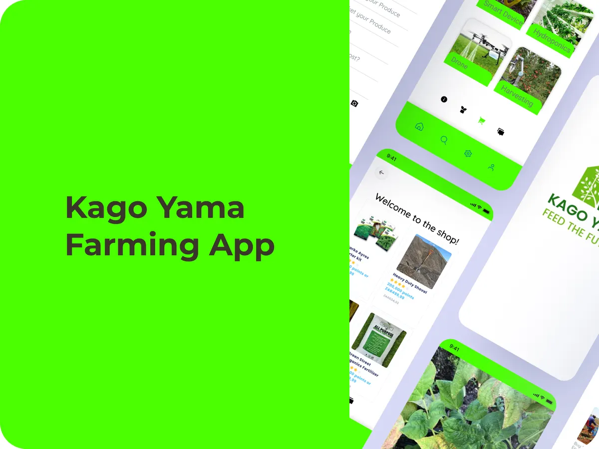

Farming app UX/UI design: Kago Yama
Kago Yama is a farming app concept for smallholder farmers around Limpopo: manage plots, spot crop problems early and sell directly to buyers. We designed about 25 screens in Figma, from onboarding to a mini marketplace. It stayed a prototype until a real farm adopted the wireframes in 2025.
- Client
- Kago Yama
- Category
- UX/UI & Product Design
- Timeframe
- 2022
- Role
- UX/UI design

The situation
Smallholder farmers in Limpopo deal with unpredictable crop health and no easy way to spot pests early, operations tracked on paper, and buyers who are often hours away with no way to book digitally.
What we built
- 01Farm profileSign-up with plot details, soil type and contact info.
- 02Daily tasksA checklist tracking planting, spraying and harvest.
- 03Crop scannerUpload a photo to flag common pests or diseases, shown as a rule-based demo.
- 04Marketplace and communityBuy supplies, list produce for local buyers, and share tips in a community feed that rewards activity.
What happened
Every flow was built in Figma with clickable hotspots and sample data from regional crop guides, then refined over three review rounds. The goal: a farmer gets from “plot to sale” in under five taps.
In 2025, a real Kago Yama farm in Limpopo used the wireframes as a blueprint for its own digital record-keeping.
Mapping every flow end to end, before any code, showed which features actually mattered: photo diagnostics, clear task reminders and a simple produce listing. The rest was nice to have.
What we’d tell you